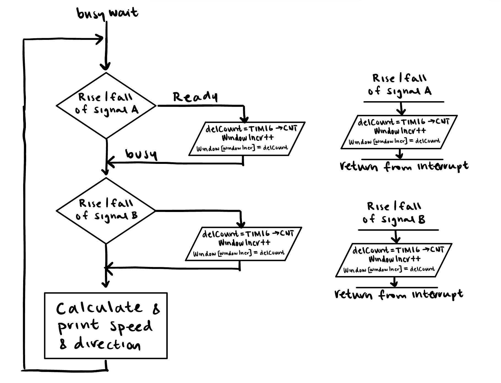
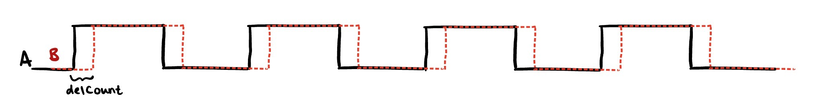
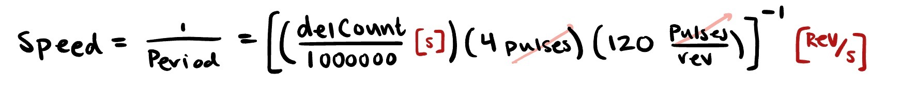
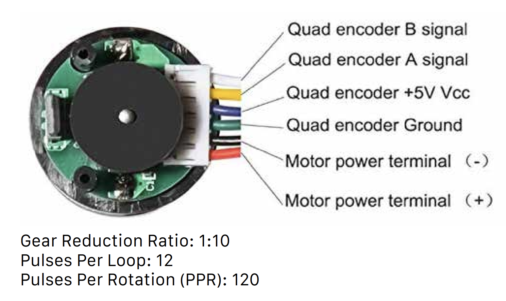
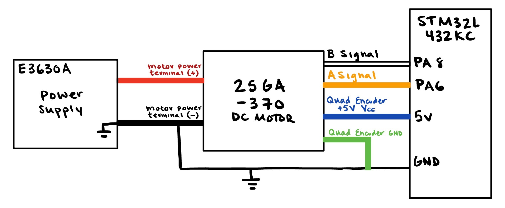
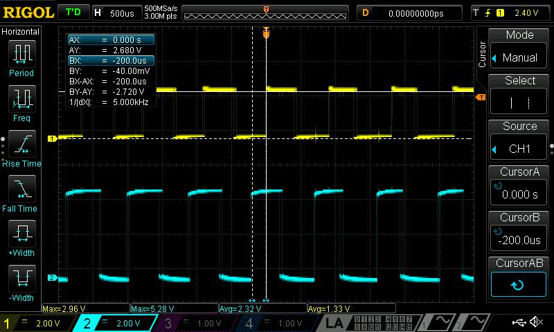
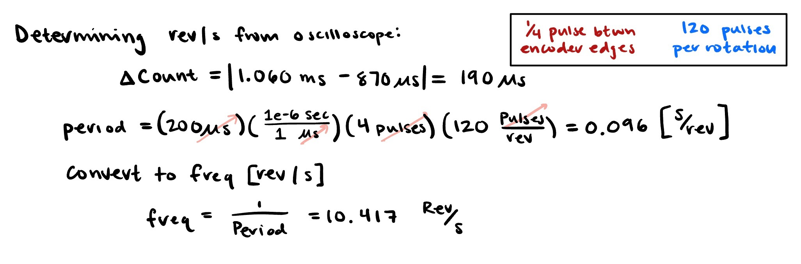
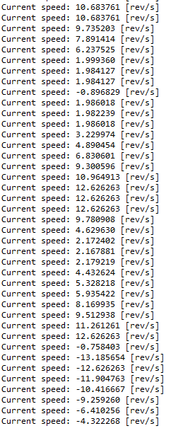

Lab 5: Interrupts
Introduction & Learning Objectives
In Lab 5, I used an MCU to determine the speed of a motor by reading from a quadrature encoder using interrupts. The Learning Objectives of this lab are to:
- Implement an algorithm to sense quadrature encoder pulses and convert those pulses into a motor velocity.
- Write code to display the measured velocity and direction to a user with an update rate of at least 1 Hz.
- Understand the quadrature encoder protocol and implemented a multi-interrupt routine on the MCU to interface with it.
The source code for the project can be found in the associated Github repository.
Design
My design utilized two external interrupts triggered by rising and falling edges of Pin 6 and Pin 8. I used two timers: TIM16 to determine motor speed and TIM2 to control the frequency in which we print the motor speed and direction. I then calculated the speed and direction from the deltaCount between the edges of the encoder pulses.
Interrupt Design
I used hardware interrupts so that the interrupt handler can be triggered at the falling and rising edge of each encoder pulse. To do so, I followed the procedure listed in “13.3.4 Hardware Interrupt” Selection on page 327 of the reference manual
I configured the interrupts to enable on the rising and falling edge of each encoder pulse, to achieve the highest resolution measurement. As I used Pin A6 for Encoder Signal A and Pin A8 for Encoder Signal B, both interrupts were handled by the EXTI9_5_IRQHandler. To determine which Encoder triggered the interrupt, I checked the flag in EXTI->PR1 at the pin offset.
Below is a flowchart showing each interrupt and the main loop that is executed.

We know that encoder A and B will alternate in triggering the interrupt, due to their relationship. Thus, I kept track of the distance between and edge of A and B in the delCount variable.

I minimized the code in the interrupts by saving values needed in calculation into global variables, and computing the speed and direction outside of the interrupt.
Timer Design
I used TIM16 as the count timer between encoder pulse edges, which was ultimately used to determine the speed. TIM16 was configured to run at 1 MHz.
I used TIM2 to act as a delay timer to slow down the printing rate. I counted at a 1ms time base, or a frequency of 1 kHz. To abide by the requirement, “Design measures and displays speed of motor in units of m/s with an update rate of at least 1 Hz,” the delay cannot exceed 1000ms.
For more information on timers, see Lab 4.
Calculating Speed and Direction
To convert the delCount variable to speed in revolutions/second, I used the following conversion. Note that I divide delCount by \(1,000,000\) to convert from counts per quarter pulse to seconds per quarter pulse, based on the clock frequency of 1 MHz.

To determine the direction of the motor, I used conditional statements in my interrupt handler, where the signal’s edge that triggered the interrupt could be used to compute direction.
Smoothing the Speed
When I printed my speed, I noticed that there was a lot of small fluctuation. After some evaluation of the encoder signals with the oscilloscope, I saw that the motors encoder signals had small variations in duty cycle and distance, that when scaled to get the speed would be exacerbated. As a result I implemented a sliding window, that calculated the average of the last 10 delCount variables to smooth the out speed. This caused a significant improvement in the readability of the output speed, with minimal impact on accuracy.
Hardware Design
The encoders used for this lab operate at a 5V logic level. I used PA6 and PA8 as these pins a 5V tolerant, as listed in Tables 13-14 in the STM32L432KC Datasheet.
This lab used a 25GA-370 DC Motor datasheet, with the following color coding.

I powered the motor with a voltage source, and attatched to my MCU, following the below wiring diagram. 
Testing & Debugging
To test, I compared the oscilloscope and printed values at 12 V.
When running the motor at 12V and evaluating the encoder signals with the oscilloscope, I found that the motor ran at 10.417 revolutions/s.
 
At 12 V, my MCU read a speed of 10.313 revoluions/s.
The motor provided in the lab is expected to spin at approximately 10 rev/s. Both values align with what we would expect.
Demonstration
Below is a photo of the printed output of the motor as I vary the motor input voltage. 
Comparing with Polling
Interrupts are more suitable than manual polling at high speeds for the motor encoder When using interrupts, the system signals the CPU when it needs attention, and will jump out of the main loop to undergo the interrupt service protocol. This ensures that each encoder edge is read. When using polling, the CPU continuously the encoder status in the main loop, leaving potential to miss encoder pulses, resulting in an inaccurate speed and direction measurement. This would be especially detrimental due to my print delays.
Conclusion
Lab 5 meets all the requirements, and took me approximately 11 hours to complete